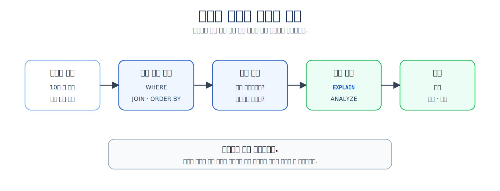
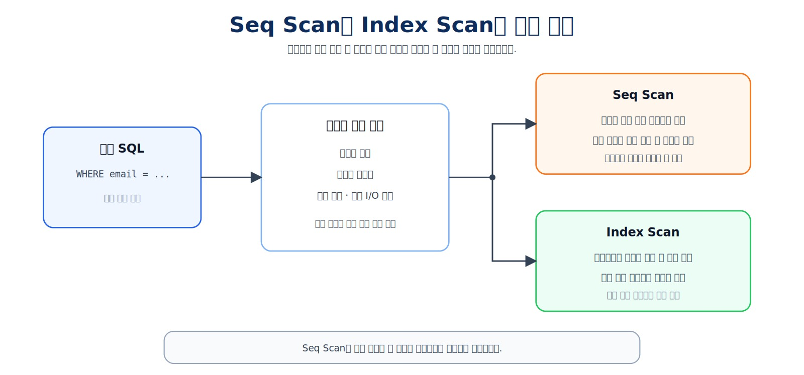
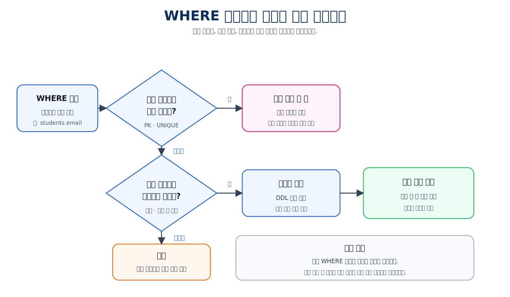
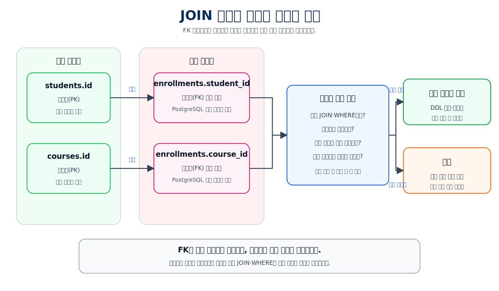
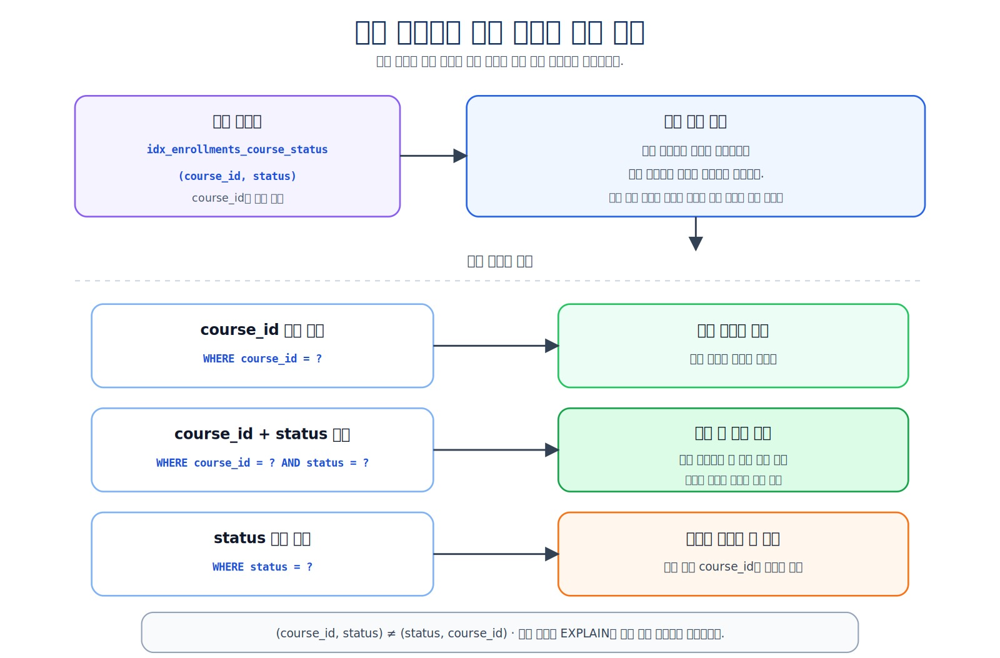
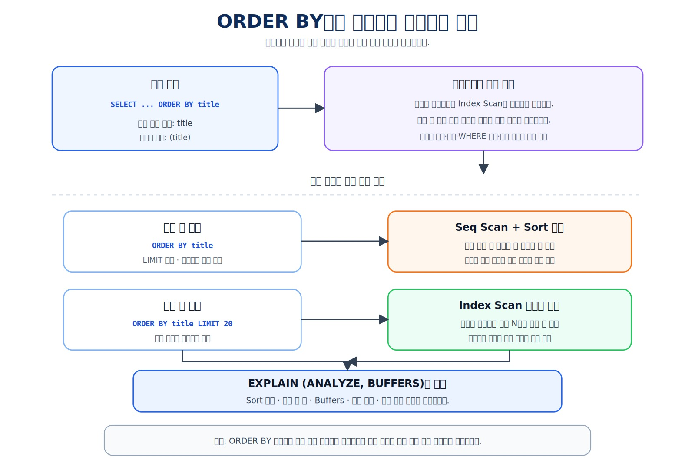
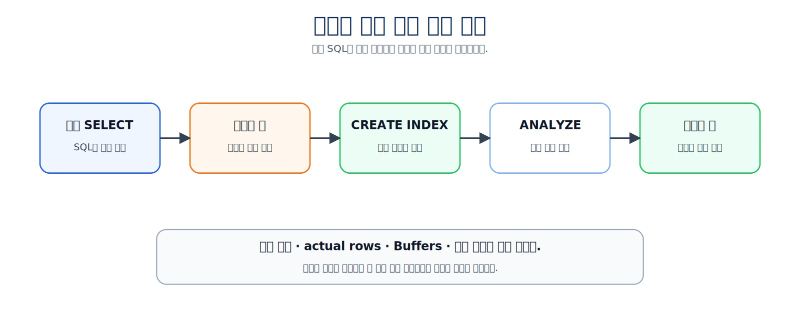
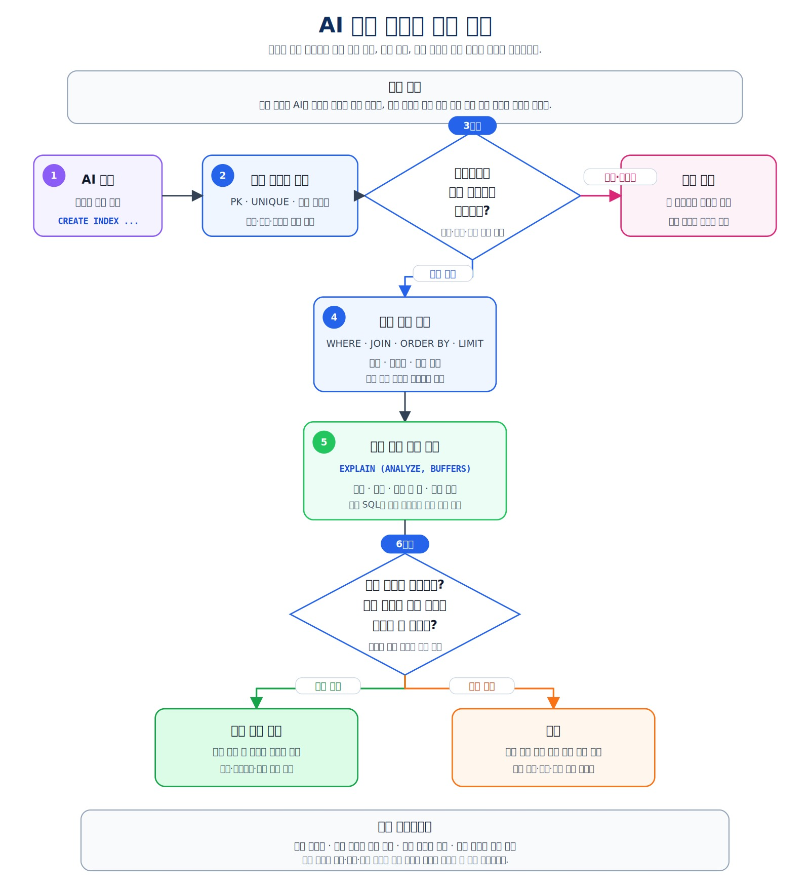

실행 계획으로 인덱스 효과 검증하기
데이터가 많아졌을 때 PostgreSQL이 어떤 경로로 행을 찾는지 확인하고, 실제 조회 패턴·데이터 규모·기존 인덱스를 기준으로 후보를 만든 뒤 실행 계획과 버퍼·실행 시간으로 전후 효과를 검증하는 방법을 익힙니다.
같은 데이터·통계·SQL에서 실제 읽기 비용이 줄었는지 어떻게 증명할까?
검증 기준 버전
이 장의 자동 검증 기준은 PostgreSQL 16입니다. PostgreSQL 16의 다중 컬럼 B-tree에서는 선두 컬럼 제약이 없으면 후행 컬럼 조건만으로 탐색 범위를 줄이기 어렵습니다. B-tree Skip Scan은 PostgreSQL 18에서 추가되었으므로, PostgreSQL 18 이상에서는 동일 SQL의 계획이 달라질 수 있습니다. 실습 결과에는 서버 버전을 함께 기록합니다.
Chapter 07·08 시작 기준
course_project의 students / instructors / courses / enrollments = 3 / 2 / 3 / 5, 상태는 신청 2 / 수강중 1 / 완료 1 / 취소 1이어야 합니다.
course_project.enrollments.recorded_amount는 NUMERIC(12,0)이며, 전체 기록 금액은 590000, 활성 신청은 3건 / 340000, 취소 제외 이력은 4건 / 440000입니다.
기준 신청은 1001 = 완료 / 100000, 1004 = 취소 / 150000, 1005 = 신청 / 120000이고 uq_course_enrollments_active가 존재해야 합니다. 또한 Chapter 07의 명명 제약조건 15개와 NOT NULL 열 20개가 유지되어야 합니다. Chapter 10은 이 상태를 읽기만 하고 변경하지 않습니다.
이 장에서 살펴볼 내용
Chapter 08에서는 course_project 데이터를 JOIN하고 집계했으며, Chapter 09에서는 별도 transaction_lab에서 데이터 변경의 원자성과 정합성을 확인했습니다. 이번 장에서는 데이터가 많아졌을 때 PostgreSQL이 어떤 경로로 행을 찾는지 살펴보고, 인덱스가 실제로 도움이 되는지를 실행 계획으로 검증합니다.
실제 조회 질문 정의
→ 실험 데이터와 기존 인덱스 확인
→ 기준 SQL의 실행 계획 측정
→ 인덱스 후보와 컬럼 순서 결정
→ 후보 인덱스 생성
→ 같은 통계·같은 SQL로 다시 측정
→ 결과 행·계획·버퍼·시간 비교
→ 적용·보류·제거 결정 기록
이 장에서는 다음 내용을 다룹니다.
- B-tree 인덱스의 기본 역할
PRIMARY KEY,UNIQUE와 자동 인덱스- 외래키 자식 컬럼과 수동 인덱스
Seq Scan,Index Scan,Bitmap Heap Scan- 선택도와 반환 행 수
WHERE,JOIN,ORDER BY,LIMIT기반 후보 찾기- 복합 인덱스의 선두 컬럼, 컬럼 순서와 PostgreSQL 18+ Skip Scan
EXPLAIN,EXPLAIN ANALYZE,BUFFERS- 예상 행 수와 실제 행 수 비교
- 실험 데이터와 통계 조건 통제
- 중복·미사용·과도한 인덱스 검토
- 읽기 이점과 쓰기·저장 비용
- 일반
CREATE INDEX와 운영 환경의CONCURRENTLY - AI 추천 인덱스 검증
핵심 원칙
인덱스는 컬럼에 붙이는 장식이 아니라 반복되는 조회 패턴을 더 적은 비용으로 처리하기 위한 선택입니다. 적용 여부는 같은 데이터·통계·SQL의 인덱스 전후 실행 계획으로 판단합니다.
1. 작은 프로젝트 데이터와 성능 실험 데이터는 역할이 다르다
Chapter 07의 course_project에는 학생 3명, 강의 3개와 신청 5건이 있습니다. 이 정도 규모에서는 전체 테이블을 순차적으로 읽어도 비용이 매우 작기 때문에 인덱스 전후 차이를 관찰하기 어렵습니다.
Chapter 10에서는 기존 프로젝트를 삭제하거나 대량 데이터로 오염시키지 않고 별도 스키마를 사용합니다.
course_project
- Chapter 07·08의 작은 프로젝트 데이터
- 변경하지 않음
transaction_lab
- Chapter 09의 트랜잭션 실습 데이터
- 변경하지 않음
performance_lab
- Chapter 10의 대량 성능 실험 데이터
- 독립적으로 생성·초기화
성능 실습 구조는 같은 온라인 강의 도메인을 사용하지만 독립적인 데이터셋입니다.
performance_lab.students
performance_lab.instructors
performance_lab.courses
performance_lab.enrollments
이 장의 실습 파일은 public, course_project, transaction_lab 객체를 삭제하지 않습니다.
합성 데이터와 업무 규칙
성능 실험용 합성 데이터라고 해서 의미가 없는 값을 무작위로 넣지는 않습니다. 다음 기준을 유지합니다.
학생별 신청 10건
강의별 신청 50건
동일 학생·강의 조합은 한 번만 생성
신청 당시 강의 가격을 recorded_amount에 저장
동일 학생·강의 활성 신청 중복 0건
다만 Chapter 07의 활성 신청 부분 고유 인덱스는 performance_lab에 미리 만들지 않습니다. 이 장은 신청 테이블의 인덱스 생성 전 기준 계획을 측정해야 하기 때문입니다. 데이터 생성식으로 규칙을 만족시키고, 마지막 검증 SQL로 중복이 0건인지 확인합니다.

그림 10-1 데이터 증가와 인덱스 검토
2. 실습 파일과 실행 순서
code/chapter10/
├── 01_performance_lab_schema.sql
├── 02_performance_lab_seed.sql
├── 03_baseline_explain.sql
├── 04_create_candidate_indexes.sql
├── 05_after_index_explain.sql
├── 06_index_review.sql
├── 07_result_validation.sql
├── reset_performance_lab.sql
├── index_performance_practice.sql
└── README.md
권장 실행 순서는 다음과 같습니다.
01 사전 조건 검사·스키마 생성
→ 02 대량 데이터 생성·IDENTITY 조정·ANALYZE
→ 03 후보 인덱스가 없는 기준 계획 기록
→ 04 세 실험 후보 인덱스 생성
→ 05 같은 SQL의 사후 계획 기록
→ 06 자동·수동 인덱스와 사용 통계 검토
→ 07 결과 행·데이터 상태 자동 검증
index_performance_practice.sql은 기존 링크 호환용 안내·상태 확인 파일입니다.
모든 파일은 다음 위치를 확인합니다.
SELECT current_database();
SELECT current_schema();
SHOW search_path;
모든 객체를 performance_lab.students처럼 스키마 한정 이름으로 사용하므로 current_schema()가 performance_lab일 필요는 없습니다.
단계별 상태 보호
01 실행 전
- ai_database_book
- course_project.enrollments 5행
- performance_lab 미생성
02 실행 전
- 네 테이블 존재
- 네 테이블 모두 비어 있음
- 실험 후보 인덱스 없음
03 실행 전
- 기준 행 수 일치
- 실험 후보 인덱스 0개
04 실행 전
- 기준 계획 기록 완료
- 실험 후보 인덱스 0개
05·06·07 실행 전
- 실험 후보 인덱스 3개
조건이 맞지 않으면 SQL 파일이 예외를 발생시켜 잘못된 비교를 막습니다.
3. 기준 데이터와 재현성
기본값은 다음과 같습니다.
| 테이블 | 기본 행 | 자동 생성 행 | 최종 예상 행 |
|---|---|---|---|
students |
3 | 10,000 | 10,003 |
instructors |
2 | 0 | 2 |
courses |
3 | 2,000 | 2,003 |
enrollments |
5 | 100,000 | 100,005 |
성능 학생은 ID 1001~11000을 사용합니다. 이메일도 실제 ID와 맞춥니다.
student_id = 5000
email = performance5000@example.com
대량 신청 생성식은 학생마다 서로 다른 강의 10개를 배정합니다. 각 강의에는 정확히 50건의 신청이 분포합니다.
주요 기준 결과는 다음과 같습니다.
| 조건 | 기대 행 수 |
|---|---|
이메일 performance5000@example.com |
1 |
제목 성능 테스트 강의 00500 |
1 |
student_id = 5000 |
10 |
course_id = 1500 |
50 |
course_id = 1500 AND status = '수강중' |
15 |
전체 status = '수강중' |
30,001 |
같은 enrollments 100,005행을 기준으로 반환 비율을 계산하면 인덱스 후보의 성격이 더 잘 보입니다.
| 조건 | 반환 행 | 대략적인 반환 비율 | 해석 |
|---|---|---|---|
student_id = 5000 |
10 | 약 0.010% | 매우 적은 행 선택 |
course_id = 1500 |
50 | 약 0.050% | 적은 행 선택 |
course_id = 1500 AND status = '수강중' |
15 | 약 0.015% | 매우 적은 행 선택 |
status = '수강중' |
30,001 | 약 30.0% | 많은 행 반환 |
반환 비율이 낮다고 무조건 인덱스가 선택되는 것은 아니지만, 왜 student_id·course_id 조건은 인덱스 후보가 되고 status 단독 조건은 Seq Scan이 합리적일 수 있는지 설명하는 중요한 단서입니다. 선택도뿐 아니라 테이블 크기, 필요한 컬럼, 정렬, 캐시와 비용 추정도 함께 봅니다.
PC 성능에 따라 데이터 생성 시간이 달라질 수 있습니다. 생성 건수를 줄이면 PostgreSQL이 인덱스보다 Seq Scan을 선택할 가능성이 커지고, 이 장의 기대 행 수와 자동 검증 SQL도 함께 수정해야 합니다.
4. 명시적 ID와 IDENTITY 시작값
실습은 관계와 기준값을 쉽게 재현하기 위해 ID를 직접 입력합니다.
students 최대 ID 11000
instructors 최대 ID 202
courses 최대 ID 3000
enrollments 최대 ID 110000
GENERATED BY DEFAULT AS IDENTITY는 명시적 값을 허용하지만 내부 시퀀스의 다음 번호를 자동으로 맞추지는 않습니다. 따라서 샘플 입력 후 다음 시작값을 조정합니다.
ALTER TABLE performance_lab.students
ALTER COLUMN id RESTART WITH 11001;
ALTER TABLE performance_lab.instructors
ALTER COLUMN id RESTART WITH 203;
ALTER TABLE performance_lab.courses
ALTER COLUMN id RESTART WITH 3001;
ALTER TABLE performance_lab.enrollments
ALTER COLUMN id RESTART WITH 110001;
IDENTITY 번호는 행 수나 빈틈없는 업무 순번이 아닙니다.
5. 인덱스가 필요한 이유
다음 SQL은 이메일이 일치하는 학생 한 명을 찾습니다.
SELECT id, name, email
FROM performance_lab.students
WHERE email = 'performance5000@example.com';
학생이 10,003명이라면 매번 모든 행을 읽는 것보다 이메일 값이 정렬된 보조 구조에서 위치를 찾는 것이 유리할 수 있습니다.
인덱스는 일반적으로 다음 정보를 유지합니다.
인덱스 키 값
→ 원본 테이블 행을 찾는 위치 정보
PostgreSQL의 기본 CREATE INDEX는 B-tree 인덱스를 만듭니다.
CREATE INDEX idx_performance_courses_title
ON performance_lab.courses(title);
B-tree는 정확 일치, 범위 조건과 정렬 등 다양한 일반 조회에 사용할 수 있습니다. 전문 검색, 배열, JSON, 공간, 벡터 검색에는 다른 인덱스 유형이 필요할 수 있습니다.
6. 자동 인덱스와 수동 인덱스를 먼저 구분한다
PostgreSQL은 기본키와 고유 제약조건을 유지하기 위해 인덱스를 자동 생성합니다.
| 구조 | 인덱스 자동 생성 | 이 장의 처리 |
|---|---|---|
PRIMARY KEY |
고유 인덱스 생성 | 같은 컬럼에 다시 만들지 않음 |
UNIQUE |
고유 인덱스 생성 | 기존 인덱스를 먼저 확인 |
자식 테이블의 FOREIGN KEY |
자동 생성하지 않음 | 조회·삭제 패턴에 따라 검토 |
| 일반 컬럼 | 자동 생성하지 않음 | 실제 SQL을 기준으로 검토 |
현재 인덱스는 다음 SQL로 확인합니다.
SELECT
schemaname,
tablename,
indexname,
indexdef
FROM pg_indexes
WHERE schemaname = 'performance_lab'
ORDER BY tablename, indexname;
students.email과 instructors.email은 UNIQUE이므로 이미 고유 인덱스가 있습니다. AI가 다음 인덱스를 추천해도 바로 만들지 않습니다.
-- UNIQUE 자동 인덱스와 중복 가능성이 큼
CREATE INDEX idx_students_email
ON performance_lab.students(email);
중요한 것은 이름이 아니라 키 컬럼, 순서, 조건과 역할이 기존 인덱스와 겹치는지입니다.
외래키 자식 컬럼 인덱스는 외래키 정확성을 위해 반드시 필요한 구조는 아닙니다. 다만 JOIN, 부모 행 삭제와 부모 키 변경 시 자식 행을 찾는 비용을 줄일 수 있습니다.
7. 통계는 기준 계획 전에 한 번 수집한다
대량 데이터 입력 후 다음 명령으로 옵티마이저 통계를 수집합니다.
ANALYZE performance_lab.students;
ANALYZE performance_lab.instructors;
ANALYZE performance_lab.courses;
ANALYZE performance_lab.enrollments;
ANALYZE table_name과 EXPLAIN ANALYZE query는 역할이 다릅니다.
ANALYZE table
→ 옵티마이저가 사용할 데이터 분포 통계 수집
EXPLAIN ANALYZE query
→ 쿼리를 실제 실행하고 계획의 실제 수치 측정
이 장에서는 데이터 생성 후 통계를 한 번 수집합니다. 후보 인덱스를 만든 뒤에는 다시 ANALYZE하지 않습니다.
같은 데이터
+ 같은 테이블 통계
+ 같은 SQL
+ 후보 인덱스 존재 여부만 변경
ANALYZE는 통계 표본을 다시 수집할 수 있으므로 인덱스 생성 후 다시 실행하면 계획 차이에 새로운 통계 표본의 영향이 섞일 수 있습니다. 운영에서는 통계 갱신이 중요하지만, 이 실험에서는 비교 조건을 통제하는 것이 목적입니다.
8. 실행 계획을 읽는 기본 방법
EXPLAIN은 쿼리를 실제 실행하지 않고 예상 계획을 보여 줍니다.
EXPLAIN
SELECT ...;
EXPLAIN ANALYZE는 쿼리를 실제로 실행하고 실제 행 수와 시간을 표시합니다.
EXPLAIN (ANALYZE, BUFFERS)
SELECT ...;
| 항목 | 의미 | 주의점 |
|---|---|---|
| 계획 노드 | 행을 찾고 연결·정렬하는 방법 | 한 노드만 보고 결론 내리지 않음 |
cost |
옵티마이저의 상대적 예상 비용 | 밀리초가 아님 |
rows |
예상 반환 행 수 | 통계 기반 추정 |
actual rows |
실제 반환 행 수 | 예상과 차이 확인 |
actual time |
실제 실행 시간 범위 | 캐시·장비 영향을 받음 |
loops |
해당 노드 반복 횟수 | 실제 작업량 해석에 중요 |
Buffers |
블록 hit·read 등 | 읽기 작업량 비교에 유용 |
Filter |
행을 읽은 뒤 적용한 조건 | 제거된 행 수 확인 |
Index Cond |
인덱스 탐색에 사용된 조건 | 실제 인덱스 사용 근거 |
Sort |
별도 정렬 작업 | 메모리·디스크 사용 확인 |
이 장에서는 EXPLAIN (ANALYZE, BUFFERS)를 SELECT에만 사용합니다. 변경 SQL에 사용하면 실제 데이터가 변경될 수 있습니다.
한 번의 실행 시간만으로 결론을 내리지 않습니다. 같은 환경에서 여러 번 관찰하고 계획, Buffers와 행 수를 함께 비교합니다.
이 실습에서는 enable_seqscan, enable_indexscan, enable_bitmapscan을 모두 기본값 on으로 둡니다. SET enable_seqscan = off처럼 특정 계획을 강제로 피하게 만들면 인덱스가 존재할 때 실제 옵티마이저가 자발적으로 선택하는지를 비교할 수 없습니다. 이런 설정은 진단용 가설 실험에는 쓸 수 있지만, 인덱스 효과의 최종 증거로 사용하지 않습니다.
실행 계획과 결과 행은 다르다
EXPLAIN ANALYZE는 쿼리를 실제 실행하지만 일반 조회 결과 대신 실행 계획을 출력합니다. 결과 내용과 건수가 같은지는 별도 SQL로 확인해야 합니다.
SELECT COUNT(*)
FROM performance_lab.enrollments
WHERE course_id = 1500
AND status = '수강중';
07_result_validation.sql은 기준 SQL의 기대 행 수와 데이터 상태를 자동으로 판정합니다.
9. Seq Scan, Index Scan과 Bitmap Scan

그림 10-2 Seq Scan과 Index Scan의 검색 경로
Seq Scan
테이블의 행을 순서대로 읽고 조건을 확인합니다.
작은 테이블
반환 비율이 높은 조건
대부분의 행이 필요한 집계
인덱스 탐색과 원본 행 접근 비용이 더 큰 경우
이런 상황에서는 인덱스가 있어도 Seq Scan이 합리적입니다.
Index Scan
인덱스에서 조건에 맞는 키를 찾은 뒤 원본 행에 접근합니다.
소수 행을 선택하는 정확 일치
LIMIT와 정렬 방향이 맞는 조회
인덱스 탐색 비용보다 절약되는 읽기가 큰 경우
Bitmap Index Scan + Bitmap Heap Scan
여러 인덱스 위치를 비트맵으로 모은 뒤 필요한 테이블 블록을 묶어 읽습니다. 한 행보다 많은 행이 필요하지만 전체 테이블을 읽을 정도는 아닐 때 선택될 수 있습니다.
실행 계획 노드는 정답표가 아닙니다. 데이터 규모, 선택도, 캐시와 설정에 따라 달라질 수 있습니다.
10. WHERE 조건에서 인덱스 후보 찾기

그림 10-3 WHERE 조건에서 인덱스 후보 판단하기
이 SQL은 실제로 자주 실행되는가?
테이블이 충분히 큰가?
조건이 전체 행 중 비교적 적은 행을 선택하는가?
기존 PK·UNIQUE·수동 인덱스로 해결되는가?
쓰기 비용과 저장 공간을 감수할 가치가 있는가?
이메일 검색
SELECT id, name, email
FROM performance_lab.students
WHERE email = 'performance5000@example.com';
email은 UNIQUE 자동 인덱스를 사용하므로 새 수동 인덱스가 필요하지 않습니다.
강의 제목 정확 일치
SELECT id, title, level, price
FROM performance_lab.courses
WHERE title = '성능 테스트 강의 00500';
title에는 자동 인덱스가 없고 한 행을 찾는 선택도가 높은 조건이므로 실험 후보입니다.
CREATE INDEX idx_performance_courses_title
ON performance_lab.courses(title);
LIKE '%데이터%'처럼 문자열 앞에 와일드카드가 있는 검색은 일반 B-tree 인덱스를 같은 방식으로 활용하지 못할 수 있습니다. 이 장에서는 정확 일치 검색에 집중합니다.
11. JOIN과 외래키 자식 컬럼

그림 10-4 JOIN 관계와 외래키 인덱스 후보
students.id와 courses.id는 기본키이므로 자동 인덱스가 있습니다. 반면 다음 자식 FK 컬럼에는 자동 인덱스가 없습니다.
enrollments.student_id
enrollments.course_id
학생 한 명의 신청 목록을 자주 조회한다면 다음 인덱스를 검토할 수 있습니다.
CREATE INDEX idx_performance_enrollments_student_id
ON performance_lab.enrollments(student_id);
비교 SQL:
SELECT
e.id,
s.name AS student_name,
c.title AS course_title,
e.status,
e.recorded_amount
FROM performance_lab.enrollments AS e
JOIN performance_lab.students AS s
ON s.id = e.student_id
JOIN performance_lab.courses AS c
ON c.id = e.course_id
WHERE e.student_id = 5000;
기대 결과는 10행입니다.
모든 FK에 기계적으로 인덱스를 추가하지 않습니다. 실제 읽기·변경 패턴과 테이블 크기를 확인합니다.
12. 복합 인덱스, 선두 컬럼과 PostgreSQL 18+ Skip Scan
강의별 특정 상태의 신청을 자주 조회한다고 가정합니다.
SELECT id, student_id, course_id, status, recorded_amount
FROM performance_lab.enrollments
WHERE course_id = 1500
AND status = '수강중';
다음 복합 인덱스가 실험 후보입니다.
CREATE INDEX idx_performance_enrollments_course_status
ON performance_lab.enrollments(course_id, status);

그림 10-5 복합 인덱스의 선두 컬럼과 쿼리 조건
일반적인 B-tree 복합 인덱스에서는 왼쪽부터 이어지는 컬럼 조건이 중요합니다.
| 조건 | (course_id, status) 활용 가능성 |
|---|---|
course_id = 1500 |
선두 컬럼 사용 가능 |
course_id = 1500 AND status = '수강중' |
두 컬럼 모두 조건에 사용 가능 |
status = '수강중' |
일반적으로 제한적이며 반환 비율도 높음 |
선두 컬럼 조건이 없다고 인덱스가 절대 사용되지 않는 것은 아닙니다. PostgreSQL은 선두 컬럼의 고유값 수와 비용이 적절하면 PostgreSQL 18+ Skip Scan을 선택할 수 있습니다. 다만 이 데이터에서는 course_id 고유값이 약 2,000개이고 수강중 행도 30,001건이므로 Seq Scan이 더 합리적일 가능성이 큽니다.
실제 선택은 실행 계획으로 확인합니다.
실제 WHERE·JOIN 조건의 조합
단독 조건으로 자주 쓰이는 선두 컬럼
각 컬럼의 분포와 선택도
정렬 요구
기존 인덱스와의 중복
이 장에서는 course_id 단일 인덱스를 별도로 만들지 않습니다. 복합 인덱스가 선두 컬럼 조건에도 사용되는지 측정하고 역할 중복 가능성을 검토합니다.
13. ORDER BY, LIMIT와 인덱스

그림 10-6 ORDER BY에서 인덱스가 사용되는 흐름
courses(title) 인덱스를 만든 뒤 다음 두 SQL을 비교합니다.
SELECT id, title, level, price
FROM performance_lab.courses
ORDER BY title;
SELECT id, title, level, price
FROM performance_lab.courses
ORDER BY title
LIMIT 20;
전체 2,003행을 반환하는 첫 SQL에서는 Seq Scan + Sort가 합리적일 수 있습니다. 두 번째 SQL은 정렬 순서의 앞부분 20행만 필요하므로 인덱스 순서대로 읽는 계획이 유리할 가능성이 있습니다.
인덱스가 있다는 이유만으로 별도 Sort가 반드시 사라지는 것은 아닙니다. 정렬 방향, NULL 순서, 선택 컬럼, 반환 행 수와 비용에 따라 달라집니다.
14. 인덱스 전후를 같은 조건으로 비교한다

그림 10-7 인덱스 전후 실행 계획 비교
1. 후보 인덱스가 없는지 자동 검사한다.
2. 기준 SQL을 EXPLAIN (ANALYZE, BUFFERS)로 실행한다.
3. 계획 노드·rows·actual rows·Buffers·Execution Time을 기록한다.
4. 세 실험 후보 인덱스만 생성한다.
5. 데이터와 테이블 통계는 변경하지 않는다.
6. 완전히 같은 SQL을 다시 실행한다.
7. 별도 검증 SQL로 결과 행과 데이터 상태를 확인한다.
8. 읽기 감소가 쓰기 비용을 감수할 만큼 의미 있는지 판단한다.
| 항목 | 생성 전 | 생성 후 | 해석 |
|---|---|---|---|
| 주요 계획 노드 | |||
| 예상 rows | |||
| actual rows | |||
| Buffers hit/read | |||
| Planning Time | |||
| Execution Time | |||
| 결과 행 동일 |
실행 시간이 짧아졌다는 이유 하나만으로 승인하지 않습니다. 캐시 영향이 있으므로 읽은 블록 수와 탐색 경로도 함께 봅니다.
15. 예상 행 수와 실제 행 수의 차이
옵티마이저는 통계를 이용해 각 단계의 행 수를 예상합니다.
rows = 예상값
actual rows = 실제값
두 값이 크게 다르면 상위 JOIN 방식이나 스캔 선택에도 영향을 줄 수 있습니다.
ANALYZE가 최근 실행되었는가?
데이터 분포가 심하게 치우쳐 있는가?
컬럼 간 상관관계가 큰가?
조건 값이 매우 흔하거나 매우 드문가?
통계 표본이 충분한가?
입문 단계에서는 먼저 통계 수집 시점과 데이터 분포를 확인합니다. 확장 통계와 세밀한 통계 목표 설정은 이 장의 범위를 넘습니다.
16. 인덱스의 비용
인덱스는 읽기를 줄일 수 있지만 무료가 아닙니다.
| 비용 | 설명 |
|---|---|
| 저장 공간 | 테이블과 별도로 인덱스 구조 저장 |
| INSERT 비용 | 새 키를 인덱스에도 추가 |
| UPDATE 비용 | 인덱스 키 변경 시 구조 갱신 |
| DELETE 비용 | 인덱스 항목도 정리 |
| VACUUM·유지보수 | 변경이 많은 인덱스 관리 필요 |
| 캐시 경쟁 | 여러 인덱스가 메모리 사용 |
| 계획·운영 복잡성 | 비슷한 인덱스가 여러 개면 관리 어려움 |
읽기가 매우 드문 컬럼이나 반환 비율이 높은 상태 컬럼마다 인덱스를 만드는 것은 비용만 늘릴 수 있습니다.
17. 실습의 CREATE INDEX와 운영 환경
이 장은 독립된 실험 스키마이므로 일반 CREATE INDEX를 사용하고 세 인덱스를 하나의 트랜잭션에서 생성합니다.
운영 중인 큰 테이블에서는 일반 인덱스 생성이 쓰기 작업에 영향을 줄 수 있습니다.
실습 DB
→ 일반 CREATE INDEX
→ 짧고 통제된 실험
운영 DB
→ 잠금 영향·소요 시간·추가 디스크 공간 검토
→ 필요하면 CREATE INDEX CONCURRENTLY 검토
→ 실패 후 INVALID 인덱스 확인
CREATE INDEX CONCURRENTLY는 일반 생성보다 더 오래 걸리고 여러 단계를 수행하지만 동시 쓰기를 막는 영향을 줄이는 데 사용할 수 있습니다. 다만 트랜잭션 블록 안에서는 실행할 수 없습니다.
AI가 운영 인덱스 생성 SQL을 제안했다면 다음을 확인합니다.
일반 CREATE INDEX로 가능한 점검 시간인가?
CONCURRENTLY가 필요한가?
트랜잭션 블록 안에서 실행하려는가?
실패 시 남은 INVALID 인덱스 처리 계획이 있는가?
18. 중복 인덱스와 제거 판단
전후 측정을 위한 실험 후보는 다음 세 개입니다.
idx_performance_courses_title
idx_performance_enrollments_student_id
idx_performance_enrollments_course_status
아직 “최종 적용 인덱스”가 아닙니다. 최종 판단은 워크북의 측정 결과에 따라 달라집니다.
중복 가능성 예:
students.email UNIQUE 자동 인덱스
+ 별도 students(email) 인덱스
→ 역할 중복 가능성
(course_id) 단일 인덱스
+ (course_id, status) 복합 인덱스
→ 선두 컬럼 역할 중복 가능성
복합 인덱스가 단일 인덱스를 항상 완전히 대체한다고 단정하지 않습니다. 인덱스 크기, 쿼리 형태, 정렬과 실제 계획을 비교합니다.
DROP INDEX performance_lab.idx_performance_courses_title;
06_index_review.sql은 인덱스를 자동 삭제하지 않습니다. 제거 SQL은 주석 상태로 제공하며 측정 기록을 검토한 뒤 선택합니다.
19. 인덱스 사용 통계를 해석할 때 주의한다
PostgreSQL은 pg_stat_user_indexes에서 인덱스 사용 통계를 제공합니다.
SELECT
schemaname,
relname AS table_name,
indexrelname AS index_name,
idx_scan,
pg_size_pretty(pg_relation_size(indexrelid)) AS index_size
FROM pg_stat_user_indexes
WHERE schemaname = 'performance_lab'
ORDER BY relname, indexrelname;
idx_scan = 0이라고 즉시 삭제하면 안 됩니다.
통계가 방금 초기화되었을 수 있다.
해당 워크로드가 아직 실행되지 않았을 수 있다.
월말·배치처럼 드물지만 중요한 조회일 수 있다.
PK·UNIQUE 인덱스는 제약조건 유지에 직접 필요하다.
FK 자식 인덱스는 JOIN·부모 변경 성능 근거를 더 확인해야 한다.
idx_scan은 사용자 SQL 실행 횟수와 항상 같은 값이 아닙니다. 실행 계획 내부의 인덱스 탐색 방식에 따라 증가할 수 있으므로 충분한 기간과 다른 통계도 함께 봅니다.
20. AI 추천 인덱스 검토

그림 10-8 AI 추천 인덱스 검토 흐름
AI에게 단순히 “인덱스를 추천해 주세요”라고 요청하지 않습니다.
PostgreSQL performance_lab.enrollments는 100,005행입니다.
다음 조회가 반복됩니다.
[실제 SQL]
현재 인덱스 목록:
[pg_indexes 결과]
인덱스 후보를 제안하되 다음을 포함해 주세요.
1. 쿼리의 기준 행과 조건
2. 기존 PK·UNIQUE·수동 인덱스와 중복 여부
3. 컬럼 순서와 PostgreSQL 18+에서의 Skip Scan 가능성 근거
4. 예상되는 읽기 이점
5. INSERT·UPDATE·DELETE 비용
6. EXPLAIN ANALYZE 전후 검증 SQL
7. 결과 동일성 검증 SQL
8. 운영 적용 시 잠금과 CONCURRENTLY 검토
9. 적용·보류·제거 기준
| 검토 영역 | 확인 질문 |
|---|---|
| 워크로드 | 실제로 반복되는 SQL인가? |
| 규모 | 현재 데이터 규모에서 의미가 있는가? |
| 기존 인덱스 | 자동·수동 인덱스와 겹치지 않는가? |
| 선택도 | 조건이 충분히 적은 행을 선택하는가? |
| 컬럼 순서 | 복합 인덱스 선두 컬럼이 쿼리와 맞는가? |
| 계획 변화 | Index Cond, Buffers와 실제 시간이 개선되는가? |
| 결과 행 | 인덱스 전후 의미와 행 수가 같은가? |
| 쓰기 비용 | 읽기 이점이 유지 비용보다 큰가? |
| 운영 생성 | 잠금과 CONCURRENTLY를 검토했는가? |
| 범위 | 다른 스키마와 테이블을 변경하지 않는가? |
대표적인 AI 오류:
UNIQUE 자동 인덱스와 같은 인덱스 추천
WHERE에 등장하는 모든 컬럼마다 단일 인덱스 추천
복합 인덱스 컬럼 순서 근거 없음
선두 컬럼이 없으면 절대 사용되지 않는다고 단정
작은 테이블의 Seq Scan을 무조건 문제로 판단
EXPLAIN ANALYZE를 UPDATE·DELETE에 무심코 적용
운영 잠금 영향 없이 일반 CREATE INDEX 실행
실제 계획·결과 비교 없이 성능 향상을 단정
21. 자주 하는 실수
- 기존 프로젝트 데이터를 성능 데이터로 덮어쓴다.
performance_lab만 사용합니다. - 기준 인덱스가 이미 있는데 생성 전 계획을 측정한다. 단계별 보호 구문을 확인합니다.
- 인덱스 생성 후 데이터를 바꾸거나
ANALYZE를 다시 실행해 비교 조건을 섞는다. - 명시적 ID 입력 후 IDENTITY 다음 값도 자동으로 이동한다고 생각한다.
- 인덱스가 있으면 반드시
Index Scan이 나와야 한다고 생각한다. cost를 밀리초로 읽는다.- FK 자식 컬럼에도 자동 인덱스가 생긴다고 생각한다.
EXPLAIN ANALYZE가 쿼리를 실제 실행한다는 사실을 잊는다.- 실행 계획만 보고 결과 행 동일성을 확인했다고 생각한다.
- 다른 SQL이나 다른 통계 상태를 전후에 비교한다.
- 복합 인덱스의 컬럼 순서와 PostgreSQL 18+에서의 Skip Scan 가능성을 단정적으로 해석한다.
- 실행 시간 한 번만 비교한다.
- 읽기 성능만 보고 쓰기·저장 비용을 무시한다.
- 운영 환경에 일반
CREATE INDEX를 바로 적용한다. idx_scan = 0만 보고 인덱스를 삭제한다.
22. 스스로 확인하기
- 작은
course_project대신performance_lab이 필요한 이유는 무엇인가요? - 성능 합성 데이터도 활성 신청 중복을 만들지 않도록 한 이유는 무엇인가요?
- 명시적 ID 입력 뒤 IDENTITY 시작값을 조정하는 이유는 무엇인가요?
PRIMARY KEY,UNIQUE,FOREIGN KEY의 자동 인덱스 차이를 설명해 보세요.Seq Scan이 합리적인 경우는 언제인가요?Index Scan과Bitmap Heap Scan은 어떤 상황에서 선택될 수 있나요?EXPLAIN과EXPLAIN ANALYZE의 차이는 무엇인가요?- 실행 계획과 실제 결과 행 검증을 분리해야 하는 이유는 무엇인가요?
- 인덱스 생성 후
ANALYZE를 다시 하지 않은 이유는 무엇인가요? (course_id, status)가status단독 조건에도 사용될 가능성이 전혀 없다고 단정하면 안 되는 이유는 무엇인가요?ORDER BY title LIMIT 20에서 인덱스가 유리할 수 있는 이유는 무엇인가요?- 예상 rows와 actual rows의 차이가 큰 경우 무엇을 확인해야 하나요?
- 자동 UNIQUE 인덱스와 중복되는 수동 인덱스를 피해야 하는 이유는 무엇인가요?
- 일반
CREATE INDEX와CREATE INDEX CONCURRENTLY는 어떤 상황에서 검토하나요? idx_scan = 0만으로 삭제를 결정하면 안 되는 이유는 무엇인가요?- AI 추천 인덱스를 승인하기 전에 필요한 증거를 설명해 보세요.
측정값과 판단을 기록하려면 book/chapter10/chapter10_activity.md의 워크북을 사용합니다.
23. 권장 해설
자동 인덱스
PRIMARY KEY와 UNIQUE는 제약조건을 유지하기 위한 고유 인덱스를 자동 생성한다.
FOREIGN KEY 자식 컬럼에는 자동 인덱스가 생성되지 않는다.
스캔 방식
Seq Scan: 많은 행이 필요하거나 테이블이 작을 때 합리적
Index Scan: 선택도가 높은 조건에서 소수 행을 찾을 때 유리 가능
Bitmap Scan: 전체보다는 적지만 여러 행과 블록이 필요할 때 선택 가능
실행 계획
cost는 상대 비용이며 밀리초가 아니다.
rows는 예상값, actual rows는 실제값이다.
Filter는 읽은 뒤 조건 적용, Index Cond는 인덱스 탐색 조건이다.
EXPLAIN ANALYZE는 실제 실행하지만 일반 결과 행 대신 계획을 출력한다.
실험 통제
02에서 데이터를 생성하고 ANALYZE한다.
03에서 후보 인덱스 없이 기준 계획을 기록한다.
04에서는 인덱스만 생성하고 통계는 다시 수집하지 않는다.
05에서 같은 SQL을 다시 측정한다.
07에서 결과 행과 기준 상태를 자동 검증한다.
복합 인덱스
선두 컬럼 조건이 일반적으로 중요하다.
후행 컬럼 단독 조건은 제한적일 수 있다.
PostgreSQL 18 이상은 데이터 분포와 비용에 따라 Skip Scan을 선택할 수 있으므로 실제 계획을 확인한다.
운영 인덱스 생성
일반 CREATE INDEX는 실습과 점검 시간에 적합하다.
운영에서는 쓰기 잠금 영향을 검토하고 필요하면 CONCURRENTLY를 고려한다.
CONCURRENTLY는 트랜잭션 블록 안에서 실행할 수 없고 실패한 INVALID 인덱스를 확인해야 한다.
사용 통계
idx_scan=0은 즉시 삭제 명령이 아니다.
통계 기간, 제약조건 역할, 드문 중요 워크로드와 인덱스 크기를 함께 본다.
24. 핵심 정리
1. 성능 실험은 기존 프로젝트와 분리된 performance_lab에서 수행한다.
2. 합성 데이터도 업무 의미와 검증 가능한 기준 상태를 가진다.
3. 명시적 ID 뒤 IDENTITY 시작값을 조정한다.
4. 인덱스를 만들기 전에 실제 쿼리·데이터 규모·기존 인덱스를 확인한다.
5. PRIMARY KEY와 UNIQUE는 자동 인덱스를 만들지만 FK 자식 컬럼은 그렇지 않다.
6. Seq Scan은 항상 나쁜 계획이 아니며 Index Scan도 항상 최선은 아니다.
7. 기준과 사후 측정은 같은 데이터·통계·SQL과 기본 플래너 설정을 사용한다.
8. `enable_seqscan=off` 같은 강제 설정은 최종 성능 증거로 사용하지 않는다.
9. 실행 계획과 결과 행 동일성은 별도로 검증한다.
10. 복합 인덱스는 선두 컬럼과 PostgreSQL 18+에서의 Skip Scan 가능성을 실행 계획으로 확인한다.
11. 인덱스는 조회를 줄이는 대신 저장 공간과 쓰기 비용을 증가시킨다.
12. 운영 인덱스 생성은 잠금과 CONCURRENTLY를 검토한다.
13. AI 추천은 실행 계획과 검증 결과가 있을 때만 적용 후보가 된다.
이 장에서 기억할 문장은 다음과 같습니다.
인덱스의 가치는 존재 여부가 아니라,
통제된 실험에서 줄인 읽기 비용과 추가한 유지 비용으로 판단한다.
25. 다음 장에서는
Chapter 11에서는 데이터베이스를 안전하게 보호하고 장애 후 복구하는 방법을 다룹니다.
최소 권한
역할과 사용자
비밀번호·접속 정보 보호
논리 백업과 복원
백업 파일 검증
복구 절차와 복구 가능성
AI가 만든 보안·백업 명령 검토
빠른 조회도 중요하지만, 데이터베이스는 허가된 사용자만 접근하고 필요한 시점에 복구할 수 있어야 합니다.